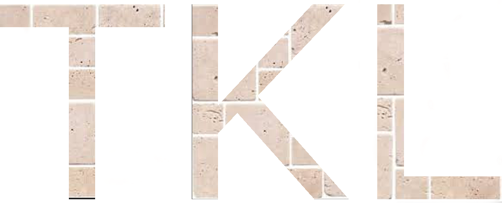

(Page Last updated July 8, 2020)

Tessellated Kernel Learning (TKL) is a free machine learning MATLAB toolbox for learning optimal Tessellated Kernel (TK) functions for Support Vector Machine (SVM) classification and regression problems. TKs are a class of kernel functions that are ideal for kernel learning because they admit a linear parameterization (tractability); are dense in the set of all kernels (accuracy); and every member is universal so that the hypothesis space is infinite-dimensional (scalability).
To install and run TKL, you need:
The software has been written and is maintained by:
A Paper on the TKL Algorithm can be found here:
B. Colbert and M. Peet
A New Algorithm for Tessellated Kernel Learning.Arxiv Preprint. 2020.
More Information on TK kernel functions can be found here:
B. Colbert and M. Peet
A Convex Parametrization of a New Class of Universal Kernel Functions for use in Kernel Learning.Journal of Machine Learning Research. Vol. 21, No. 45, 2020.
B. Colbert and M. Peet
Using SDP to Parameterize Universal Kernel Functions.IEEE Conference on Decision and Control, 2019.
Our goal is to make use of TKL as simple as humanly possible. However, our background is not in coding and sometimes we come up short. If you are having a serious technical issue and neither the help commands nor the manual are helping, and believe there is a bug in the program, please report it to: brendon.colbert@asu.edu. If there is a bug, we will add it to the known bug list and do our best to fix it.
Alternatively, if you would like to volunteer for the TKL development team, we would be happy to include you (no compensation - Sorry). Send an email to mpeet@asu.edu